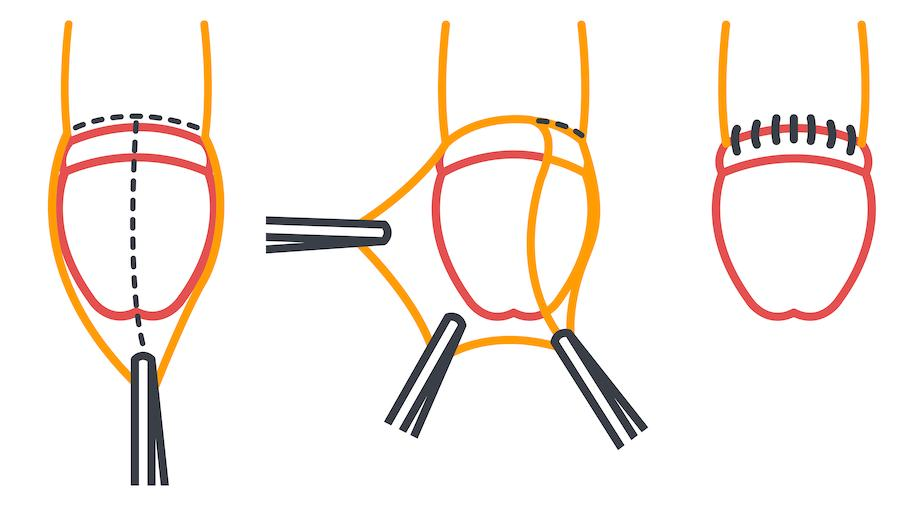

Adult circumcision is a minor surgery that removes the foreskin, the loose skin that covers the tip of the penis. This surgery is done for medical, cultural, personal, or religious reasons.
Your care team may suggest circumcision to treat:
Tight foreskin that cannot be pulled back, called phimosis
Tight foreskin that cannot be pulled forward, called paraphimosis
Pain, swelling, tearing, cancer, or repeated infections of the foreskin or head of the penis
Problems during urination or sex
Certain skin conditions, like warts or scarring
This procedure can also make it easier to keep the area clean and may lower the risk of some infections.

This procedure is safe for most patients. Like any surgery, it does carry some risks.
Possible risks include:
Bleeding
Infection at the surgery site
Swelling or soreness that lasts longer than expected
Pain with erections during healing
Change in the way the penis looks or feels
Severe problems after a circumcision do not happen often, but your care team will help manage any that do.
Your care team will talk with you about your health history and any medicines you take.
You may be asked to stop certain medicines, like blood thinners and certain weight loss medicines.
You may be told not to eat or drink for at least 8 hours before the procedure if a sedative or general anesthesia will be used.
You will sign a consent form and have a chance to ask questions.
Circumcision is usually done in a surgery center or hospital.
You will be given medicine to numb the area or to help you sleep through the surgery.
The surgeon will gently remove the foreskin using safe and sterile tools.
If you are awake, you may feel some pressure but should not feel sharp pain.
Stitches may be used to close the skin. A bandage will be placed over the area.
The procedure usually takes 30 to 60 minutes.
You will rest in a recovery area for a short time.
Most people go home the same day.
You may have swelling, bruising, or pain for a few days.
It is normal for the head of the penis to be sensitive after the surgery.
Apply an antibiotic ointment once you remove the dressing, if instructed.
You may shower 48 hours after the surgery or as instructed.
Keep the area clean and dry as instructed.
You may be given medicine for pain and to prevent infection.
Wear loose underwear and clothing to avoid pressure.
The stitches will fall off within 4 to 6 weeks.
Avoid sexual activity or masturbation until your care team says it is OK.
It is normal to feel nervous or unsure about having surgery on such a private part of the body. Some people may feel embarrassed or uncomfortable talking about it. Please know that you are not alone, and your care team is here to support you with kindness and respect. Your comfort, health, and privacy matter.
How long will it take to heal?
When can I go back to work or daily activities?
What should I do if I have pain or swelling?
Can I shower or take a bath after surgery?
When can I start sexual activity again?
Talk to your care team about any questions or concerns. We want you to feel comfortable with your health decisions.
Call your care team if you have:
Fever higher than 101°F or 38.3°C
Redness, swelling, or warmth around the penis that gets worse or does not get better
Yellow, green, or foul-smelling pus or drainage from the site
Pain that gets worse or does not get better with medicine, especially after the first few days
Trouble urinating, such as pain or burning when you urinate, or needing to urinate often but passing only a small amount
Bleeding that does not stop after gentle pressure for 5 minutes, or blood soaking through your bandage
Any questions or concerns about your healing or symptoms
Get help right away if:
You have heavy or uncontrolled bleeding that will not stop with pressure.
You have signs of a severe allergic reaction, including sudden trouble breathing, chest pain, or swelling of your face, lips, tongue, or throat.
You lose consciousness, or you have confusion or trouble waking up.
The head of your penis becomes blue, gray, or very cold, or you lose feeling in the area. This could be a problem with blood flow.
You have severe pain or swelling that comes on suddenly and is much worse than before.
You have no urine for 8 hours, or you cannot urinate at all.
Thank you for trusting us with your care. We are here to support you and want you to feel your best. Contact us with any questions.
IF YOU HAVE A MEDICAL EMERGENCY, CALL 911 OR GO TO THE EMERGENCY ROOM.
The information presented is intended for general information and educational purposes. It is not intended to replace the advice of your health care provider. Contact your health care provider if you believe you have a health problem.
Last updated May 2025
© 2025 Mytonomy, Inc. All rights reserved.